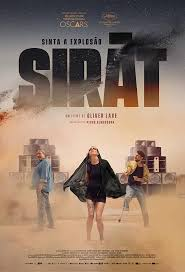

98th Annual Academy Awards
Melhor Som
Conheça os candidatos à Premiação do Oscar 2026 por Melhor Som.

Vencedora
F1: O Filme
O Trabalho: A equipe utilizou microfones customizados capazes de suportar o calor e a vibração dos motores V6 turbo-híbridos. O som não é apenas barulho; é uma sinfonia de trocas de marcha, o assobio do turbo e o vácuo aerodinâmico.
Destaque: A mixagem de som que alterna entre o silêncio abafado do capacete do piloto e o rugido ensurdecedor das arquibancadas, criando uma sensação física de velocidade.

Pecadores (Sinners)
O Trabalho: O filme utiliza frequências baixas (infrassons) para criar uma sensação instintiva de pavor no público. O som da floresta e da cidade isolada é tratado como um personagem vivo.
Destaque: O contraste sonoro entre os momentos de silêncio absoluto e as explosões de violência sobrenatural, onde o som das criaturas é uma mistura perturbadora de sons orgânicos e distorções digitais.

Sirât
O Trabalho: Foca na sonoridade dos ambientes. Desde o eco em vales profundos até o som detalhado de tecidos, metais e passos em diferentes terrenos.
Destaque: O uso do som para guiar a espiritualidade da trama. A mixagem utiliza o sistema Dolby Atmos para criar uma redoma sonora que coloca o espectador exatamente no centro do conflito ou da meditação do protagonista.

Frankenstein
O Trabalho: O laboratório de Victor Frankenstein é um banquete sonoro de fluidos borbulhando, eletricidade estática e engrenagens pesadas. O som da Criatura (respiração, passos pesados) é desenhado para evocar tanto medo quanto pena.
Destaque: O trabalho de Foley (efeitos sonoros de estúdio). O som da pele "costurada" e o movimento das articulações da Criatura trazem um realismo tátil essencial para a imersão no horror gótico.

Uma Batalha Após a Outra
O Trabalho: A equipe priorizou o som direto, capturando a energia das ruas e a cacofonia das cenas de perseguição sem excesso de polimento.
Destaque: A integração entre o som ambiente e a trilha sonora. A música e os ruídos da cidade (buzinas, sirenes, multidões) se fundem de forma que o espectador sente o caos político e social da narrativa através dos ouvidos.